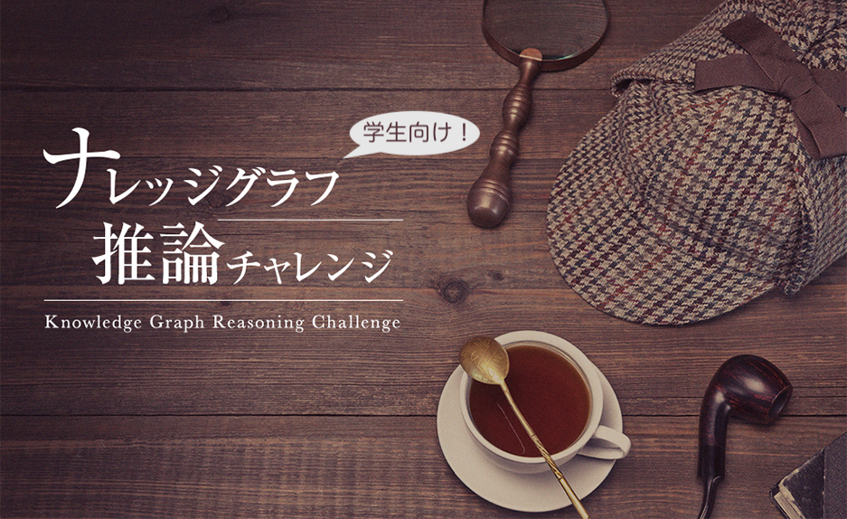

- 

ご応募ありがとうございました！
最終審査会（発表会）&授賞式は2022/03/07にオンラインで開催いたします。 ※今年度は国内版は学生向けとしてリニューアルし、一般向けに国際会議の併設ワークショップ「KGR4XAI」を開催しました
NEWS
- 2022/06/22
- 2022年度は国内向けにナレッジグラフ推論チャレンジ【実社会版】を開催し、従来のナレッジグラフ推論チャレンジは国際版として開催することを予定しています。近日中にサイトを公開します。
- 2022/03/09
- 第1回学生向け！ナレッジグラフ推論チャレンジ2021の応募作品&審査結果一覧を公開しました。
- 2022/02/25
- 2022/03/07に『第1回学生向け！ナレッジグラフ推論チャレンジ2021』最終審査会&授賞式を開催します！
- 2021/11/26
- 応募締切を2022/01/31まで延長しました。
- 2021/11/5
- 2021/12/6にKGR4XAI: The 1st International Workshop on Knowledge Graph Reasoning for Explainable Artificial Intelligence co-located with 10th International Joint Conference on Knowledge Graphs (IJCKG 2021)を開催します！（投稿締切: 11/17）
- 2021/08/17
- 2021/08/30(月)にナレッジグラフ推論チャレンジ2021「技術勉強会」 ～ナレッジグラフ利用技術の基礎と推論/説明への活用例～を開催します！
- 2021/06/09
- 第35回人工知能学会全国大会で第2回チャレンジの報告を行います！
- 2021/06/09
- 今年度のサイトを公開しました。今年度は国内版は学生向けとしてリニューアルし、一般向けに別途国際会議の併設イベントを開催します（後日詳細公開）
- 2021/03/23
- 第3回ナレッジグラフ推論チャレンジ2020の応募作品&審査結果一覧を公開しました。
開催概要
近年のDeep Learningを起爆剤とした人工知能（AI）技術への関心の高まりに伴い、AI技術が普及し様々な社会システムに埋め込まれるようになることが予想されます。
そのような中にあって、AI技術を安全・安心に社会の中で活用していくためには、システムが正しく動作しているかの検証や品質保証のため、システムが判断に至った理由を説明できる（解釈可能性を有する）AI技術が必須となります。
このよう背景のもと，人工知能学会セマンティックウェブとオントロジー研究会では、人工知能技術による推論（推定）に関して、認識の共有と必要な技術の開発・促進を図ることを目的としたコンテスト「ナレッジグラフ推論チャレンジ」を開催します。
開催スケジュール
2021/06/09 チャレンジ応募開始
第35回人工知能学会全国大会2021（オンライン開催）にてチャレンジ開始をアナウンス！
↓
参加者各自でチャレンジに取り組んでください。
↓
2021年12月上旬2022年1月31日 チャレンジ応募締め切り
↓
2022年1月中旬3月7日 最終審査会・授賞式
お問合せ
kgrc@knowledge-graph.jp
人工知能学会・セマンティックウェブとオントロジー研究会・企画委員